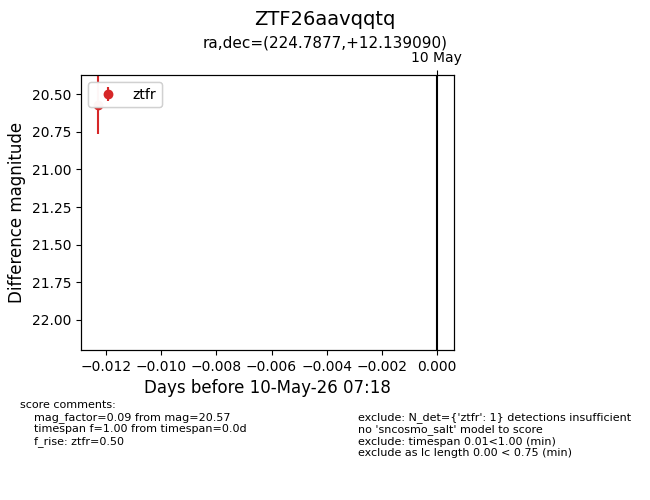
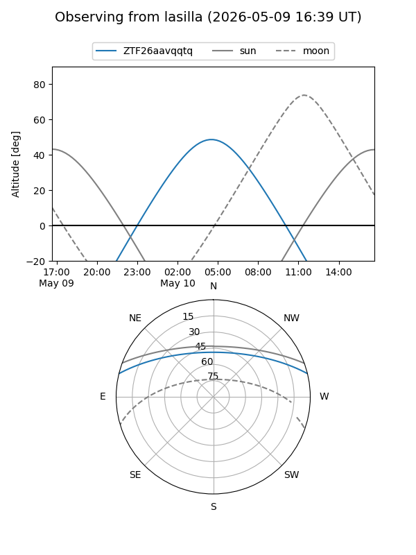
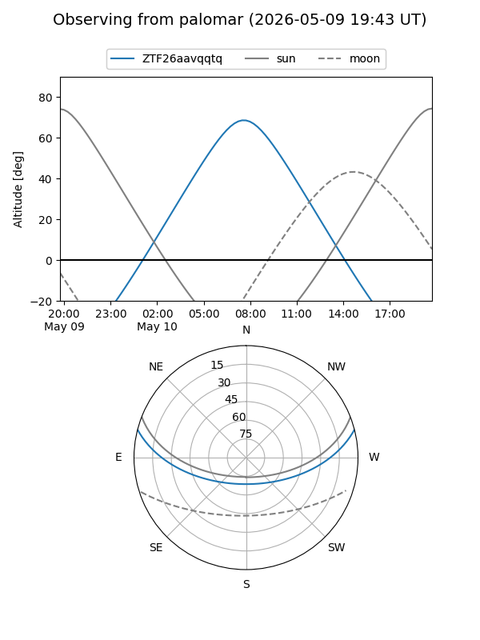
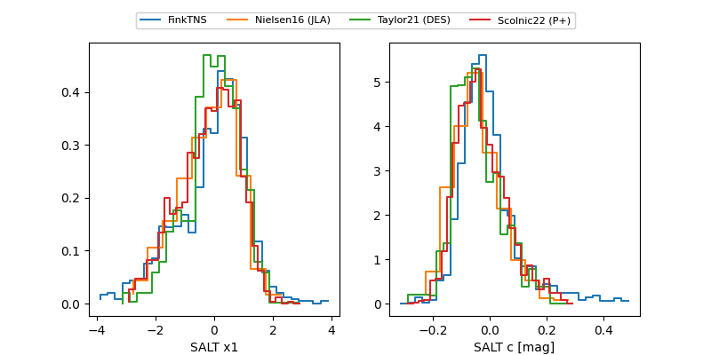

ZTF26aavqqtq
Target ZTF26aavqqtq at 2026-05-10 07:19
Aliases and brokers:
FINK: link
Lasair: link
ALeRCE: link
alt names
ZTF26aavqqtq (ztf,fink_ztf)
Coordinates:
equatorial (ra, dec) = 224.7877,+12.13909
equatorial (HMS+DMS) = 14:59:09.04,+12:08:20.73
galactic (l, b) = (12.6379,+56.54724)
Flags:
Photometry:
last ztfr=20.57
1 ztfr detections
Lightcurve

Visibility


Additional plots
